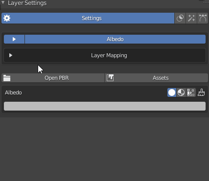
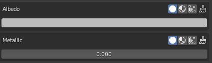
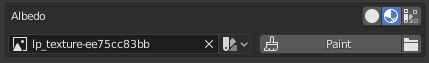
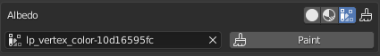
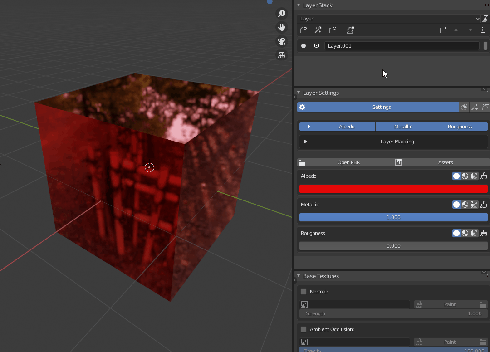

Enabling channels

To use a channel in a layer you need to enable it. After selecting the layer, go to the layer settings panel and open the channel selection.
Here you can enable and disable channels for the selected layer. When the channel selection isn't expanded, you can click on the channel names to hide that channel.
Channel settings
For every channel that you enable you will see the settings below. There are three modes for each channel: Value, Texture and Vertex color.
Value

The value is just a single value which can be either a color or just a slider. You can set this for a basic control over the channel.
Texture

If you switch to texture you can select a texture to be used on that channel. You can also click the paint button to actually paint on that channel, but this will be explained later. The dropdown next to the texture selection can be used to change the colorspace of the image.
Vertex Color

Here you can select a painted vertex color to be used in the channel or paint one.
Previewing channels

You can preview a channel by selecting it in the channel dropdown. Then click the ghost icon to see it in the viewport.